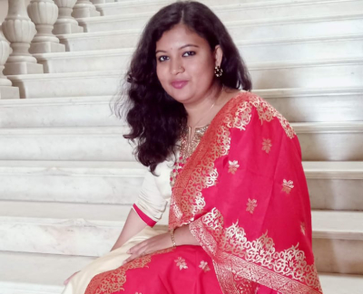

<div class="container pt-5">
  <div class="container-block">
    <h2 class="page-title bottom-line">Art and Painting</h2>
    <h5 class="page-title all-caps">Manjula G</h5>
    <div class="wrapper">
      <div class="img-wrapper">
        
      </div>
      <div>
        <p>
          Manjula G is a Visual artist with a B.F.A. from Kannada University,
          Hampi, specializing in various art forms including drawing, poster
          design and traditional face painting. She has over 6 years of teaching
          experience at different institutions and currently teaches at
          Bharatiya Vidya Bhavan for 3 years. Her artistic expertise is
          complemented by participation in multiple specialised art camps and
          workshops through Lalithakala Academy, Bengaluru.
        </p>
      </div>
    </div>

    <h5 class="page-title all-caps mt-5">Gururaj Urs B N</h5>
    <div class="wrapper">
      <p>
        Gururaj Urs B.N. is a passionate artist and art teacher based in Mysuru
        with degrees in Graphics (B.F.A, CAVA, University of Mysuru) and
        painting (MFA, KSOU). He specializes in drawing, painting, printmaking,
        sculpture and photography making him a versatile and skilled
        practitioner of visual arts. Fluent in Kannada, English and Hindi, he
        combines his artistic practice with teaching, focusing on nurturing
        creative talent of the student. He is passionately teaching with his
        wealth of experience at reputed institutions for more than 10years and
        now at Kalabharati for more than a year.
      </p>
    </div>
  </div>
</div>
